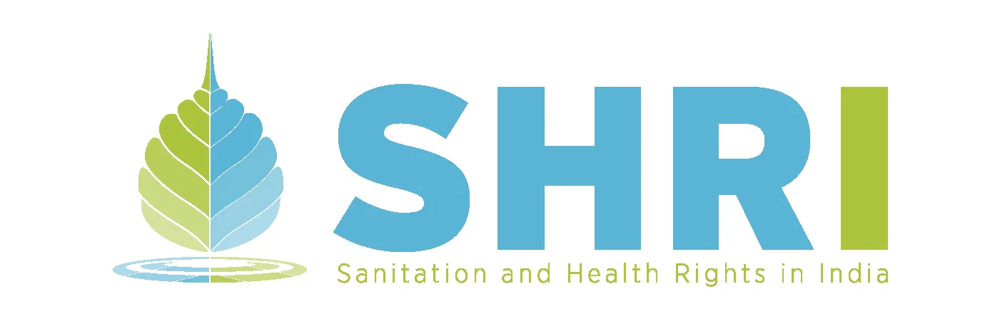
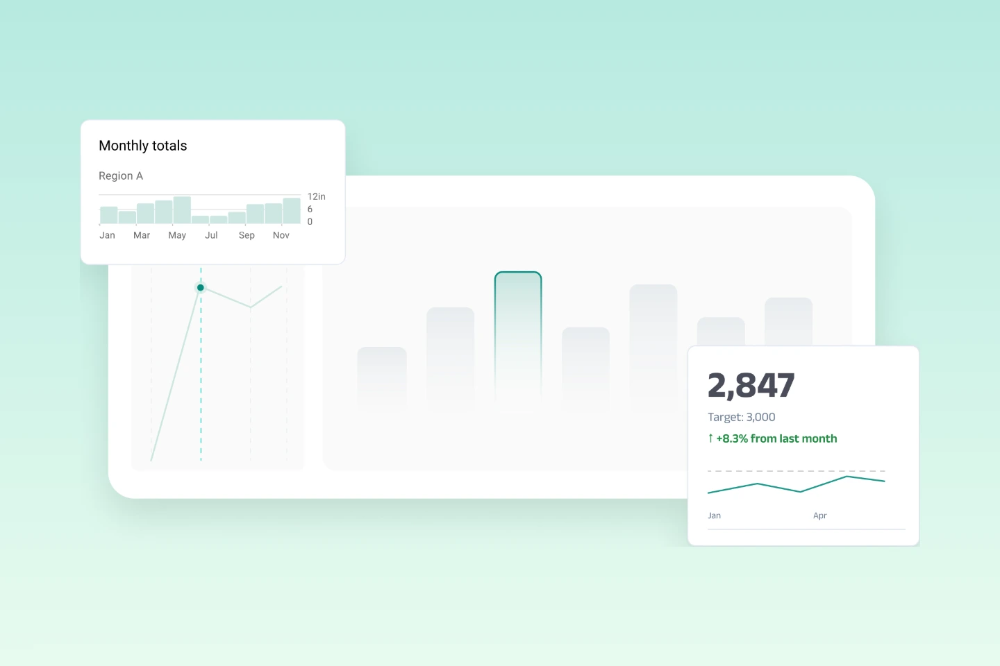
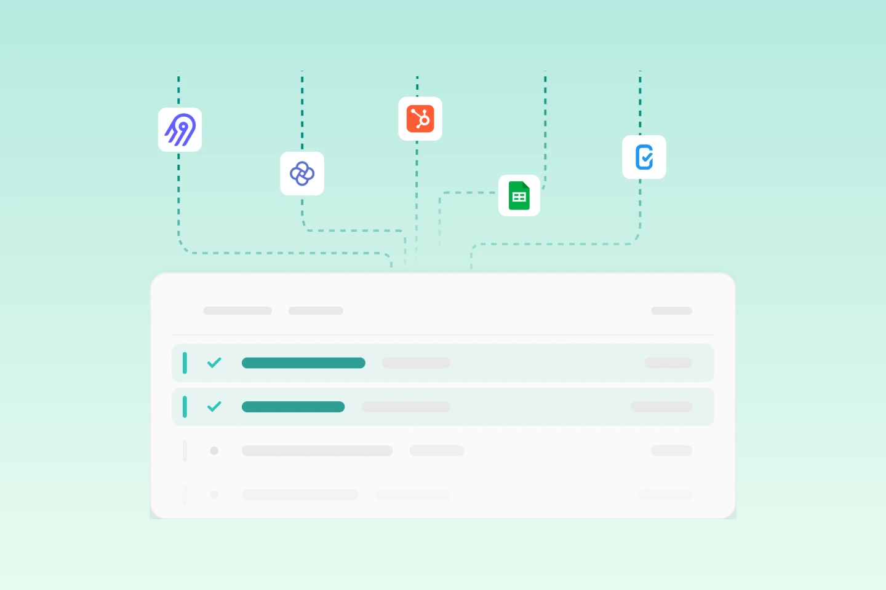
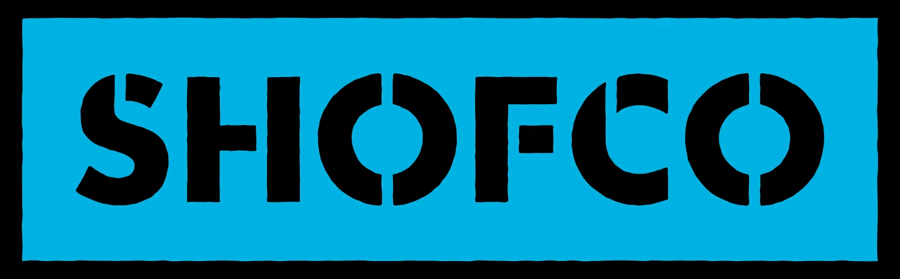

SHRI
Sanitation and health rights in India.
Surveys, spreadsheets, CRMs and case tools — brought together, cleaned, and connected in one place your whole team can trust.

Two things stood out about Dalgo 2.0. First, the map of the country — you can drill down, and as NGOs we can use that for so many representations. Second, sharing dashboards publicly: it’s much easier to just give people a link than to keep generating logins for every layer. That’s a really big upgrade.

Click through Dalgo's real product screens — connect, clean, and visualize — no signup needed.


Capabilities
One platform for everything — from data integration to data that speaks to your impact.
Your programs generate data in a dozen places — surveys, chatbots, spreadsheets, case-management tools. Dalgo consolidates all of it into a data warehouse that belongs to your organisation, cleaned and ready, so every review starts with numbers your team can trust.

Live dashboards
Live dashboards and reports nonprofits run on Dalgo today — including native examples built directly in the platform.

Sanitation and health rights in India.

Equipping families with the skills to care for patients at the bedside.

Urban transformation across Kenya's informal settlements.
A live, interactive dashboard built directly in Dalgo — explore the native experience end to end.
A shareable report generated in Dalgo, frozen to a reporting period and opened from a single link.
Trusted by the sector
Hear from the teams who run their data on Dalgo every day.
"It's thrilling to finally see an affordable service built on open-source software to support non-profits in making evidence-based decisions."
"The introduction of the dashboard has been a game-changer for our team. It has significantly reduced the time spent on compiling data manually, allowing us to focus more on analysis and decision-making rather than repetitive tasks."
"Caseworkers now save close to three hours every week on navigation and report generation, with reports that previously took half a day now generated in just a few minutes."